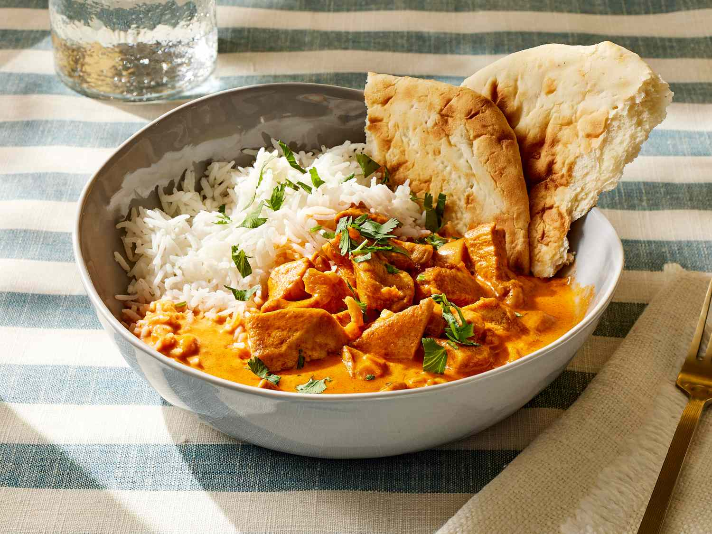
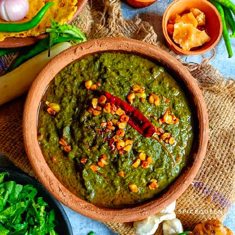
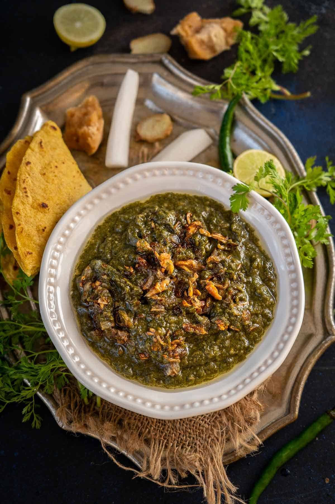
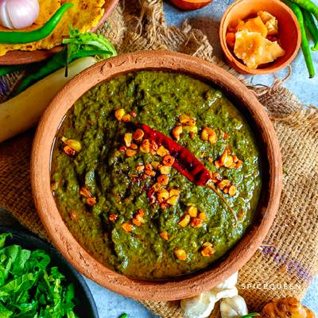
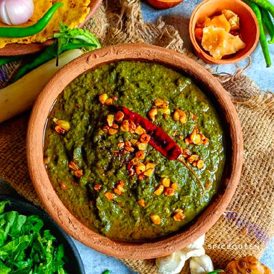
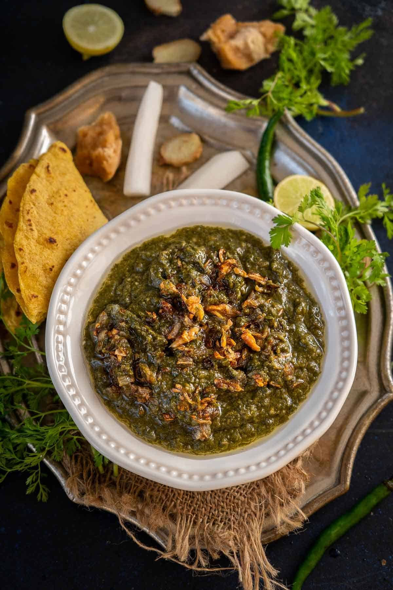
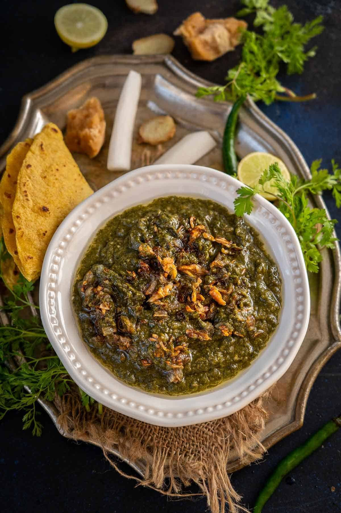

Punjabi cuisine, a culinary legacy born from the fertile plains of the Punjab region, is a symphony of robust flavors, aromatic spices, and hearty ingredients.
It's a gastronomic journey that mirrors the vibrant culture and generous spirit of its people.
Rooted in the agricultural abundance of the land, Punjabi food celebrates the bounty of nature, transforming simple ingredients into a feast for the senses.
This cuisine is characterized by its bold and unapologetic use of spices, creating a tapestry of tastes that range from the fiery heat of chilies to the warm, earthy notes of garam masala.
Dairy plays a starring role, lending richness and creaminess to dishes like velvety butter chicken and luscious paneer preparations.
The tandoor, a traditional clay oven, imparts a smoky char to meats and breads, adding another layer of complexity to the culinary experience.
Punjabi food is not merely about sustenance; it's a celebration of community and hospitality. Meals are often shared amongst family and friends, fostering a sense of togetherness and warmth.
From the bustling dhabas lining the highways to the grand feasts served during festivals and weddings, Punjabi cuisine is an embodiment of the region's lively spirit and unwavering commitment to culinary excellence.
Each dish tells a story, a testament to the rich history and enduring traditions that have shaped this beloved cuisine.

Butter Chicken also known as Murgh Makhani, is a beloved Indian dish, celebrated for its rich, creamy tomato-based sauce and tender pieces of marinated chicken. It's a culinary favorite worldwide, and its preparation involves several key steps.
The journey begins with the chicken, typically boneless pieces, which are marinated in a mixture of yogurt, lemon juice, ginger-garlic paste, and a blend of spices like garam masala, chili powder, and turmeric.
This marinade tenderizes the chicken and infuses it with flavor. Traditionally, the marinated chicken is then cooked in a tandoor, a clay oven, which imparts a smoky char. However, grilling or pan-frying are also common methods for home cooks. The heart of Butter Chicken lies in its luscious sauce.
ś
Dal Makhani, a culinary masterpiece from North India, particularly Punjab, is renowned for its luxurious, creamy texture and deeply satisfying flavor. This lentil dish begins with the crucial step of soaking whole black urad dal and rajma overnight, softening them for the long, slow cooking process that defines its character. The foundation of the dish is built upon a fragrant masala, created by sautéing onions, ginger, and garlic until golden, followed by the addition of tomato puree, which forms a rich, tangy base. A carefully selected blend of spices, including garam masala, chili powder, coriander powder, and sometimes kasuri methi, is then incorporated, infusing the dish with its characteristic warmth and complexity.


Sarson da saag is a beloved Punjabi winter dish, centers on thoroughly washed and chopped mustard greens, often blended with spinach and sometimes bathua for a balanced flavor. These greens are cooked with ginger, garlic, and green chilies until softened, traditionally achieved through long simmering or more quickly with a pressure cooker. The cooked greens are then mashed or pureed to the desired consistency, and makki ka atta (cornmeal) is incorporated to thicken the saag. A crucial step involves tempering, where ghee is heated and onions, garlic, and other spices are sautéed, then poured over the saag for a rich, aromatic finish. Traditionally, this dish is served hot with makki di roti (cornbread) and a generous dollop of white butter.
Aloo paratha is a beloved Indian flatbread, is a hearty and comforting dish, especially popular in North India. It consists of a whole wheat dough stuffed with a spiced potato filling, then pan-fried until golden brown. The simplicity of ingredients belies the depth of flavor and satisfaction it provides.
The dough, typically made from whole wheat flour (atta), water, and sometimes a touch of oil or ghee, is kneaded until smooth and pliable. Boiled potatoes are mashed and combined with a blend of spices. Common additions include finely chopped onions, green chilies, ginger, and fresh coriander leaves, which contribute layers of flavor and texture. Spices like cumin, coriander, garam masala, and red chili powder add warmth and depth. The balance of these ingredients is crucial, ensuring a flavorful filling that complements the dough.


 
 
